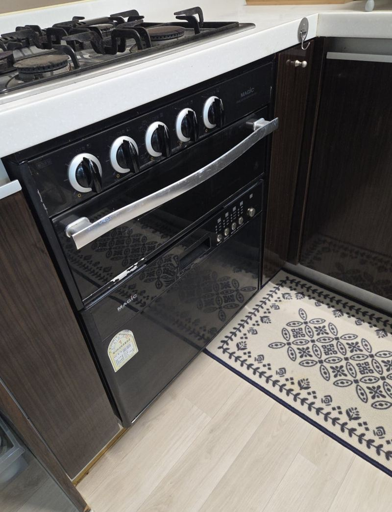
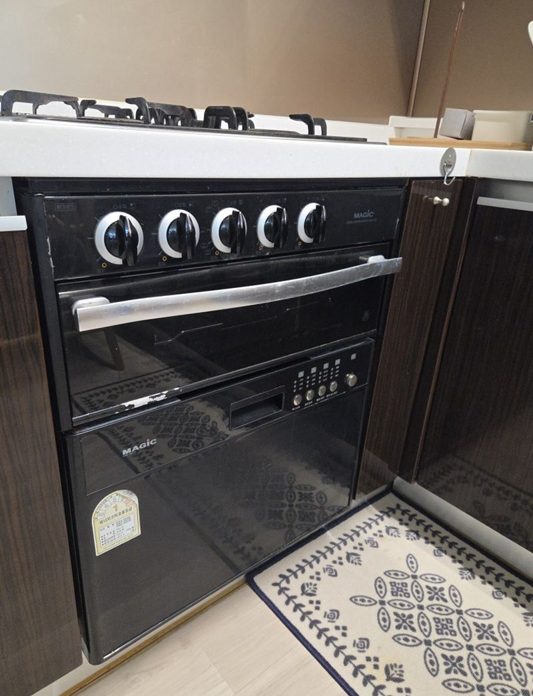
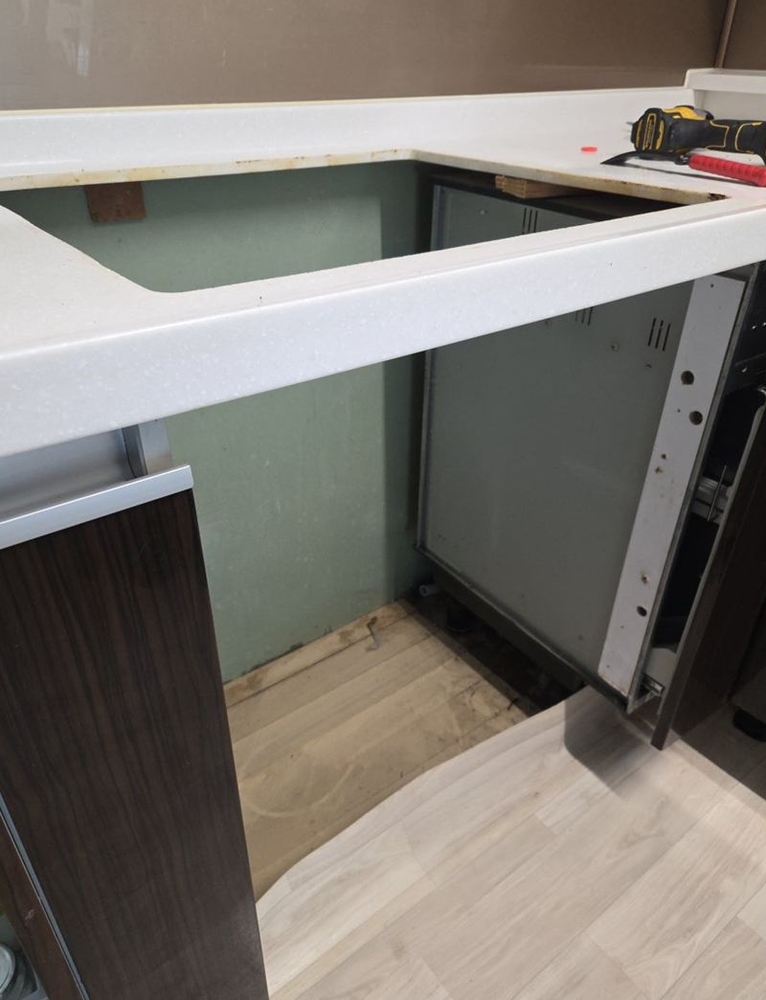
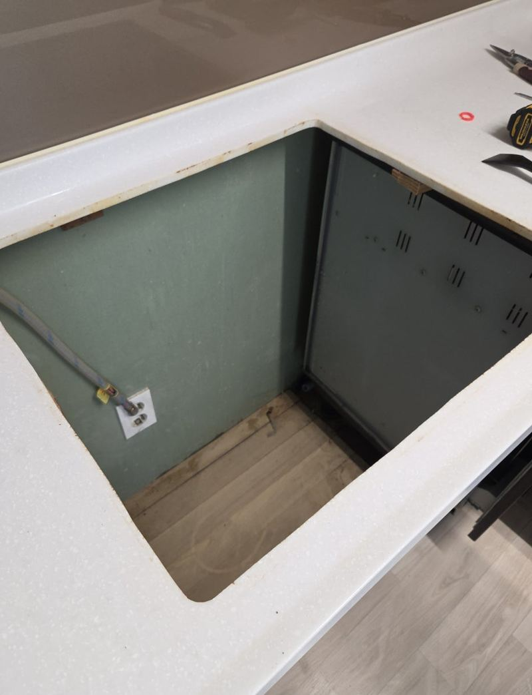
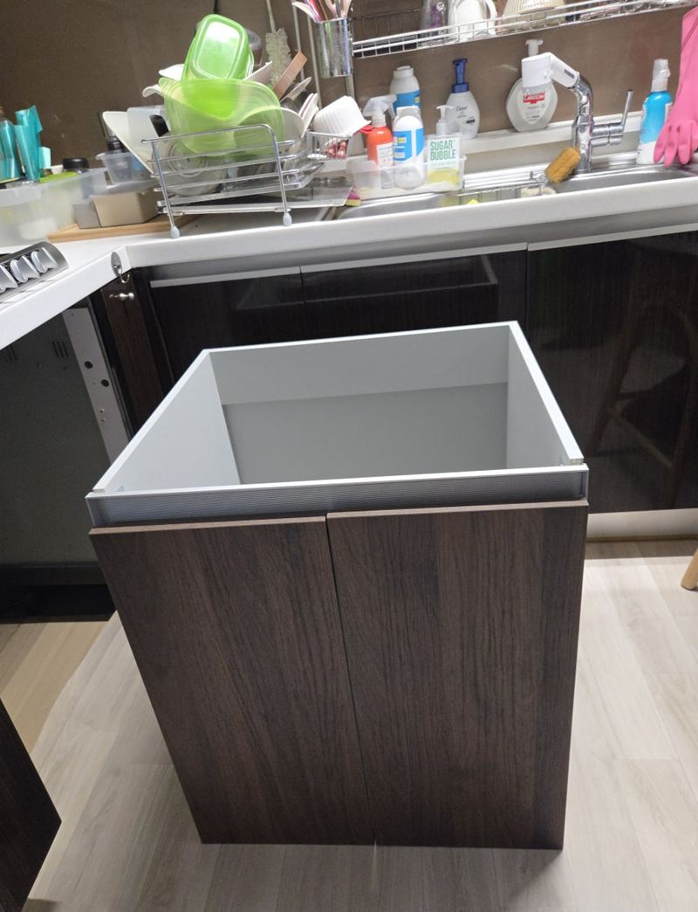
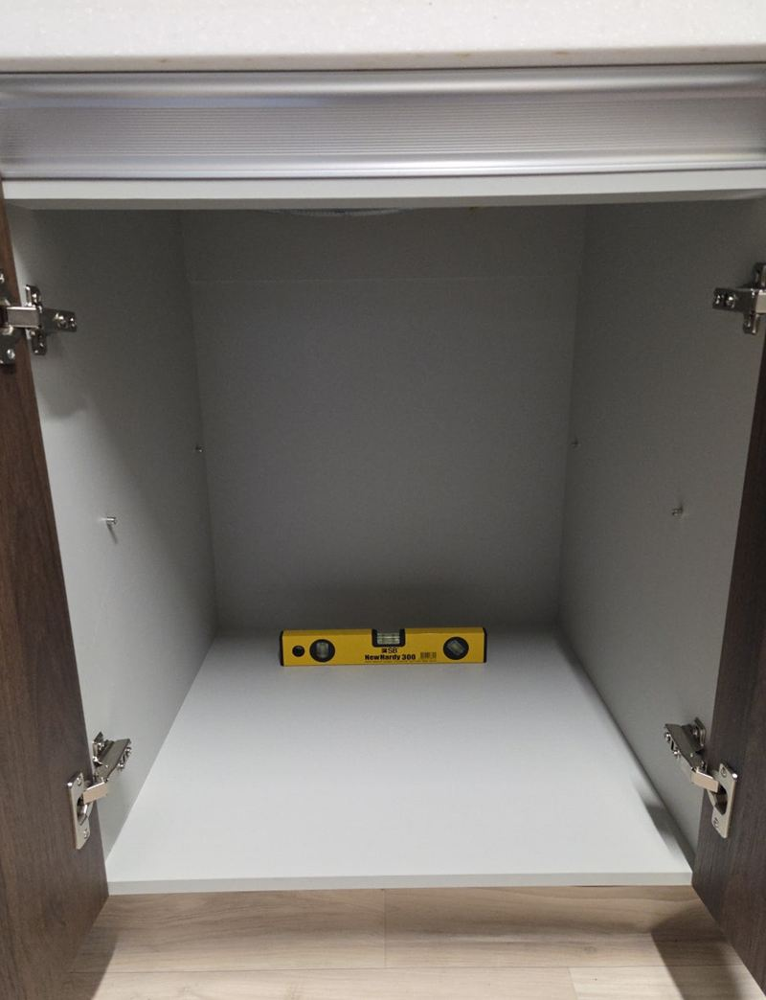
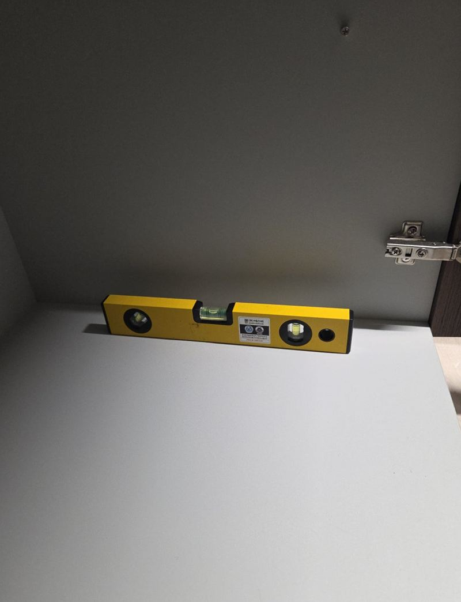
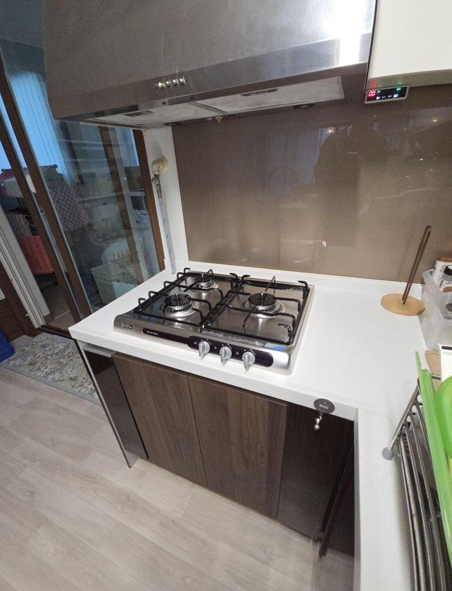

화성 빌트인 오븐 철거 후 하부장 제작 비용

 철거 전제작 후
철거 전제작 후← 밀어서 전후 비교 →
입주할 때 딸려 온 빌트인 오븐, 몇 년째 문 한 번 안 열었다는 집이 많아요. 이 집도 가스레인지·오븐·식기세척기가 한 몸으로 들어간 구조였는데, 오븐은 거의 쓰지 않으셨어요. 오븐을 떼고 그 자리를 냄비와 그릇을 넣는 서랍장으로 바꿨어요.
빼기 전에 안쪽부터 봤어요
오븐 아래로 식기세척기 급수·배수 라인이 지나가고 있었어요. 오븐만 쑥 빼면 배관이 허공에 걸리거나 새 장과 부딪혀서, 철거 전에 배관 위치와 하부장 크기를 먼저 맞춰 봤어요.


전원을 차단하고 고정 브라켓과 결합부를 순서대로 풀어 오븐을 꺼냈어요. 식세기 급배수 라인도 같이 정리하며 옆 가구와 상판에 흠이 나지 않게 작업했어요.

그 자리에 딱 맞는 장을 만든 이유
오븐이 빠진 자리는 기성 하부장 규격과 폭·깊이가 잘 안 맞아요. 억지로 넣으면 틈이 남거나 문이 옆 장과 부딪혀요. 그래서 미리 실측해서 수납 위주로 짠 하부장을 만들어 왔어요.


수평계로 바닥과 상판 높이를 맞추고, 문이 옆 장이나 식세기와 부딪히지 않는지 여닫아 보며 고정했어요. 기존 주방 가구와 어색하지 않게 마감선도 정리했어요.


떼어 낸 오븐과 부속은 요청에 따라 현장에서 수거해 처리했어요.
오븐 철거 + 하부장 비용이 갈리는 곳
| 조건 | 영향 |
|---|---|
| 식세기·가스레인지와 일체형 구조 | 배관·전기 정리가 더해져요 |
| 하부장 구성(서랍형/문짝형) | 서랍이 많을수록 제작이 늘어요 |
| 기존 가구와 색 맞춤 | 마감재 선택에 따라 달라요 |
| 철거 가전 처리 | 수거·폐기 여부 |
오븐 자리를 바꾸고 싶은 분들이 많이 하는 고민
- 오븐을 거의 안 써요안 쓰는 빌트인 가전을 빼고 수납장으로 바꾸면 주방이 훨씬 넉넉해져요.
- 오븐이 고장 났는데 고치기 아까워요수리비가 크다면 철거 후 수납장이나 다른 가전 자리로 바꾸는 방법도 있어요.
- 식세기와 붙어 있어서 겁나요급배수 라인을 정리하며 떼어 내서 식세기는 그대로 쓸 수 있게 해요.
- 서랍으로 할지 문짝으로 할지 고민돼요넣을 물건을 알려주시면 냄비용 깊은 서랍인지, 선반형인지 같이 정해요.
빌트인 오븐 철거 질문
오븐 대신 식기세척기를 넣을 수도 있나요?
급배수와 전원 위치를 보고 가능 여부를 판단해요. 수납장 대신 가전 자리로 만드는 것도 방법이에요.
상판은 그대로 두나요?
네, 이 현장은 상판을 건드리지 않고 아래 장만 바꿨어요.
가스레인지도 같이 철거할 수 있나요?
가능해요. 가스 배관 정리가 필요해서 상담할 때 함께 확인해요.
오븐을 뺀 자리에 전기가 남아 있으면요?
남은 전선은 안전하게 정리하고 마감해요. 다른 가전을 쓰실 예정이면 콘센트로 바꿔 두기도 해요.
하부장 색이 기존 장이랑 다르면 어색하지 않나요?
기존 문짝과 비슷한 색의 마감재를 골라 맞춰요. 문짝 사진을 보내 주시면 비슷한 색을 찾아 드려요.
오븐 철거만 하고 하부장은 나중에 넣어도 되나요?
가능해요. 다만 빈 자리를 오래 두면 배관이나 전선이 드러나 있으니, 철거하는 날 임시로 막아 두거나 정리해 두는 게 좋아요.
다른 싱크대·수납장 현장
- 부천 싱크대 이사 이전 재설치 비용과 방법
- 부천 아일랜드 식탁 리폼으로 공간 넓히는 방법
- 동탄 지식산업센터 싱크대 설치, 업체 고르는 기준
- 동탄 주방 싱크대 상하부장 철거·제작 비용
- 고양 싱크대 하부장 밑판 썩음, 교체 방법
- 고양 키큰장 리폼으로 상부장 만드는 방법
- 종로 싱크대 하부장 곰팡이 보수 방법
- 파주 사무실 이전 싱크대 철거 비용과 순서
- 성동 사무실 이전 시 기존 싱크대 재설치 순서
- 경기광주 부엌 수납장 교체 비용과 순서 · 블로그
- 하남 펜트리장 제작·이전 설치 방법 · 블로그
- 화성 상부장 처짐 없이 벽면 고정하는 방법 · 블로그
- 종로 오픈 수납장 문짝 새로 다는 방법 · 블로그
오븐 정면 사진과 오븐 아래 장 안쪽 사진을 보내 주세요.
전화 상담 010-4517-9872